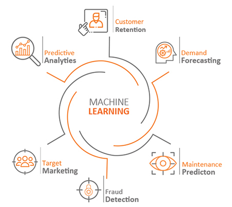

Real-World Applications of AI and ML
– Price Prediction Platform
Spar's Hazard-classifier Helps Realize Savings on Maintenance Costs
Unplanned downtime costs can cripple the best-laid production and financial plans. Smart businesses have turned to ML for help. Mining and
merging historical, contemporary data, ML algorithms lay out patters that best predict when a product, machinery is most likely to give way. This
is a boon for manufacturers, retailers as they can enjoy the luxury of just-in-time inventory.
Return on Investment for ML-based Predictive Maintenance
Reduction in maintenance costs
25-30%
Maintenance costs are inversely proportional to time - shorter the time, higher the costs. ML can give the much needed window of time
Reduction in downtime
35-45%
In service sector downtimes can
cause customer and, revenue loss
Experts have turned to ML to reduce
machinery downtime.
Increase in production
20-25%
Studies have showed that the best
production floors operate on
predictive and prescriptive modes.
ML makes that possible.
Elimination of breakdowns
70-75%
Component fatigue is among the
least understood and most
worrisome issue that aviation
industry faces. ML gives insights.
PREDICTIVE MAINTENANCE
TRADITIONAL APPROACHES

What is it that you need ML to resolve?
When it comes to scope the wheel turns a full 360-degrees
for Machine Learning. From customer retention to fraud
detection, different businesses have turned to ML to
address problems that have bugged their bottom-lines.
Spar's ML practice has ML solutions for businesses as
diverse as banking , mannufacturing and, telecom
What can Spar's ML Practice do for your business?
Expand market share, reduce uncertainty, create new revenue channels
ML-based deep learning models let you time your market expansions
In these uncertain times when markets tend to expand and shrink in quarters, it is important the
deep-learning based prediction models guide your investment decisons.
Spar's Price Prediction
Platform for BFSi
Enormously capital-intensive and
extremely volatile, flash-trading is
seen as a high risk option by all, but
a few of the big banks. Instead try
out our much safer ML-based price
platform.
Prevent, minimize both
online and offline
fraud detection
As automation and e-commerce have both become norms, prevention and minimizing of payment fraud has
become a priority task for risk and, compliance teams. It's no small wonder that banks, e-commerce firms are among the early adopters of ML.
ABOUT SPAR
SPAR is a people's company at the core.
We believe in the power of human
relationships. We constantly engage and
encourage our people to have a bias for
delivering business outcomes that result
in customer delight.
 All rights reserved to Spar Information Systems.
All rights reserved to Spar Information Systems.